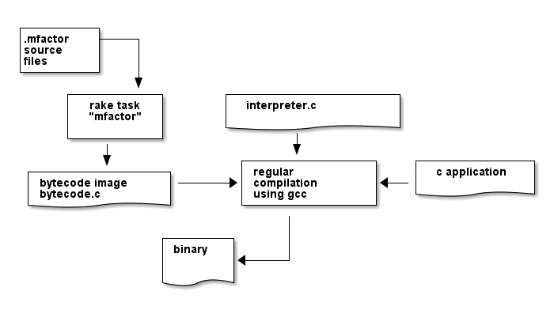

MFactor Documentation
Table of Contents
- 1. Introduction
- 2. Host Compiler
- 3. VM Implementation
- 3.1. Instruction Set
- 3.2. Definitions
- 3.3. C Implementation (
interpreter())- 3.3.1. Special Variables
- 3.3.1.1.
MP: The Memory Write Pointer - 3.3.1.2.
HANDLER: Current Exception handling frame - 3.3.1.3.
DEBUG_LEVEL: VM Debug Verbosity - 3.3.1.4.
RESTART: Restart address (deprecated) - 3.3.1.5.
STEP_HANDLER: Single Stepping Handler (not in use) - 3.3.1.6.
BASE: Current Segment base address - 3.3.1.7.
OUTPUT_STREAM: Output Stream descriptor
- 3.3.1.1.
- 3.3.2. Internal Debugging
- 3.3.3. Work Memory
- 3.3.4. Return Stack Entry Format
- 3.3.5. Word Lookup: Dictionary support
- 3.3.1. Special Variables
- 3.4. Complete Source Files
1 Introduction
MFactor is a (partial) implementation of the factor language for embedded systems. It consists of two parts:
- A host compiler, written in Ruby, which is used with the Rake build system to produce a binary image (see Host Compiler).
- A c implementation of a bytecode vm which is able to execute such an image. (see VM Implementation)
It is intended to be used with a embedded C development environment, where its sources are compiled together with the host application.
1.1 General Concept
The general idea: First compile .mfactor source files to bytecode image, then compile the

A set of mfactor source files is translated by the host compiler (called through rake task
mfactor) into a bytecode image. This bytecode image is then successively executed by
interpeter(), which is the actual VM implementation.
In order to incorporate this into a project, several rake tasks are supplied in tasks/mfactor.rake
- mfactor: the main task, which, when called, generates above code
- mftest[word name]: helper task, outputs a graphical representation of a specific word in the
generatedsubdir.
1.2 Configuring the Rake Task
The rake file is supposed to be included with rake's import facility in the host
application's own Rakefile.
Currently, it is configured via setting global variables in the including rake file. The following must be set:
MFACTOR_SRC_DIR: Determines the directory where the application's mfactor sources can be found. This should point to the application's mfactor source directory.GENERATOR: which bytecode backend to use, currently, onlyCortexis supportedSTART_WORD: word, which will be executed when starting the vmMFACTOR_ROOT_VOCAB: The root vocabulary, which is first loaded and loads all dependencies. Must be found inMFACTOR_SRC_DIR.MFACTOR_DEPENDING_OBJECTS: To cause Rake to recompile the whole image, this should be set to the object files in the application which depend on the generated output. This usually means all files that use any of the words defined inMFACTOR_C_WORDS, as well as the object file that is built fromsrc/interpreter.c
The following are for advanced functionality:
MFACTOR_C_WORDS: Hashtable for exposing word locations in bytecode to C. Format:{ "mfactor-word-name" => "NAME_OF_CPP_DEFINE" }This can be used to generate preprocessor symbols, which can be passed directly to
interpreter(), for example.FF_MFACTOR: path to file containing interface definitions to c code (see Making Existing C Functions Available)MFACTOR_IMAGE_SECTION: a string describing the linker section that the bytecode-image will pe placed intoMFACTOR_DICT_SECTION: same thing for the generated dictionary
1.3 TODO Generated Output Files
In the application's main directory, a directory generated is created during the build
process, where several files are generated:
bytecode.c- main output from the ByteCodeImage class.
bytecode.h- consists of defines that
interpreter()and maybe the user application needs to know about image.dump- after translation, the ByteCodeImage is written here using Marshal. It
can be reloaded later in the build process with
ByteCodeImage.deserializeto extract information about the image.
1.4 Making Existing C Functions Available
Special global variable FF_MFACTOR can be set to a yaml file for
"importing" existing c functions into the interpreter's namespace (Foreign function interface).
entries are in the form of:
<c_name>: name: "<mfactor-name>" call: <callspec> # following optional line is for void functions, for functions returning a value, don't use result: discard
where <callspec> describes the function's arguments, e.g. "iis" for a function like fn(int, int, int16).
Currently supported values are:
v-> fn(void)lit-> for variables (returns their address)s,i,b,bi,ib,is,ii,iis,iiiwhereiisint,bisint8andsisint16
1.5 Basic Factor concepts
For the complete Factor language, see the official documentation. The language is concatenative, and uses generally postfix syntax, e.g. the arguments are written before the "function call".
Terminology:
- Word
- the basic user-defined abstraction, like functions in most languages.
- Vocabulary
- comparable to C's compilation unit with interface definition in a header file. Contains a number of word definitions.
- Data Stack
- or Parameter Stack, holds values that are manipulated by words.
- Return Stack
- keeps track of program execution when calling into words and returning. In contrast to Forth, not directly accessible by user code.
- Retain Stack
- second stack for data, which is used to set aside stack elements that are needed for later. Used internally by all preserving Combinators.
- Quotation
- block of code enclosed in square brackets (
[]), that is pushed onto the stack as-is, without evaluation. - Combinator
word that takes quotations as input. Probably the most-used is:
condition-value [ true-quotation ] [ false-quotation ] if- Primitives
- are the low-level instructions that are executed by the VM. All words are defined in terms of Primitives and other words.
1.6 Differences to Factor
Mfactor implements a subset of factor's functionality useful for embedded systems programming. Major differences:
- no namestack, so no dynamic variables (may change, but high performance impact for embedded systems)
- vocabulary search is simplified, vocabulary
foowould be found in<MFACTOR_SRC_DIR>/foo.mfactor, vocabularyfoo.barwould be found in<MFACTOR_SRC_DIR>/foo.bar.mfactor. - same-named words in different vocabularies not supported (yet)
- interactive support only for byte-array and integer-array sequences:
B{ },I{ }, at compile time, arbitrary sequences can be used. - host compiler only supports a subset of syntax words:
:,SYNTAX:,{ },B{ },I{ }, `SYMBOLS:`,USING:,IN caseis implemented as a syntax word, so no interactive support- words beginning with underscore(
_) are not stored in the dictionary. This is intended for helper functions, to prevent them from consuming dictionary space. - no continuations, no quotation compositions(yet)
- simplified exception handling with `catch` and `throw`
- no Garbage Collector. Since interactive usage is meant to be for developing, allocated
objects by the reader are not released automatically. Any data used in normal code is
statically compiled into the image, so no runtime allocation is performed unless
specified explicitely using sequence constructors
<byte-array>and<integer-array>
2 Host Compiler
2.1 Concept
The host compiler scans MFACTOR_SRC_DIR for the vocabulary specified with
MFACTOR_ROOT_VOCAB, and loads it. When loading a vocabulary, it searches it's own
mfactor sources and the files in MFACTOR_SRC_DIR for a file named
<vocab-name>.mfactor. It recursively loads any formerly unloaded vocabularies in the
process. Loading a vocabulary involves following ruby classes:
The Parser reads the source code, checking for syntax errors and generating an internal
representation of the code. Once all the words have been loaded, the internal Image
object is turned into a ByteCodeImage object, which is the main output product.
2.2 TODO Parser details
2.3 Bytecode Generator Output
Per default, the output of the rake task is place in subdirectory generated of the
including project. This folder contains several files:
inst_enum.h- enum which contains all instruction mnemonics. These are used in the image generated in =bytecode.c"mfactor_words.h- contains all exported words, which can then be referenced from C context.bytecode.c- contains the actual byte code image, dictionary and hash tablebytecode.h- some constants which are generated during byte code compilation and used in the VM implementationimage.dump- serialized MFactor::ByteCodeImage Object, can be loaded withMFactor::ByteCodeImage::deserialize. This basically exposes all possible internals about the compiled image. Used to extract information after compilation, when themfactortask has finished.
2.4 Invocation
If MFACTOR_DEPENDING_OBJECT was set correctly in the host application's Rakefile, then a
rebuild of the application automatically triggers a recompile of the bytecode image.
2.5 TODO Compilation example
2.6 Details
2.6.1 Fried Quotations(WIP)
Fried Quotations (and their basic versions curry and compose) are the equivalent of
closures. Creating a closure always means allocating space somewhere. If the closure
creation is inlined, that space can be allocated by the compiler. Therefore, fried
quotations are currently only supported on the host compiler, and all quotations
containing them are automatically inlined. Also, if looping code is used to return
multiple results of fried quotation definitions, note that they will be equal to the last
invocation, since no allocation is performed at compile time. In theory, a runtime check
could be implemented which signals a runtime error when a quotation is being fried more
than once.
To describe the transformation, consider the following example:
! for each i where i runs from 0 below n, x is added to it before applying quot to it : each-int-added ( n x quot ( i -- ) -- ) '[ _ + @ ] each-integer; inline
Let's define a word that makes use of this word:
! print values that are passed to the quotation in each-int-added, ! the value added to each element is n, it is called 10 times : test ( n -- ) 10 swap [ . ] each-int-added ;
Conceptually, the following series of transformations is appplied internally when defining test:
test ( n -- ) 10 swap [ . ] '[ _ + @ ] each-integer
test ( n -- ) 10 swap [ . ] '[ _ + _ call ] each-integer
test ( n -- ) 10 swap [ . ] 0x0002 setmem 0x0001 setmem [ (0x0001) + (0x0002) call ] each-integer
The locations sites where the "curried-in" data is used are made explicit, and before the
quotation is passed to each-integer, code is generated that sets the actual memory
locations to their values at runtime. This is done even when the values are constant and
known at compile time.
Since it is effectively rewriting the quotation at runtime, this incurs a small performance hit. That also illustrates why these words have to be inlined. For every use, the quotation must essentially be copied if the rewritten items are to not interfere with different invocations.
the @ specifier actually does no splicing, but simply calls the original quotation.
This must be kept in mind if the spliced quotation is mutable in any way.
If code is stored in non-writable memory, another indirection is needed. The placeholders are not substituted directly, but filled at runtime by a read to a known writable location:
test ( n -- ) 10 swap 0x0001 setmem [ . ] 0x0002 setmem '[ 0x0001 getmem + 0x0002 getmem call ] each-integer
This way, no actual code rewrite is performed, but the item use costs another indirection. Effectively, this allocates "variables" in a data segment, which the compiler assumes to be writable at runtime.
Note that both versions introduce the overhead of copying the code of the original definition containing the fry at every call site!
An obvious optimization here is to separate the last part of the definition, after the fried quotation, into an own word. This is very probably almost always the case anyways, as the example definition above illustrates that typically the quotation is passed to another combinator. If that one contains fried quotations, it will obviously further increase the copied code overhead.
3 VM Implementation
The VM is a stack machine with three stacks, a data stack (or parameter stack, pstack), return stack and a retain stack.
The data stack is used for argument passing, while the return stack is used to save the program counter during sub-routines (and store some debug information). The retain stack is only used for putting stack items out of the way temporarily.
3.1 Instruction Set
The Instruction Set for the VM is defined in instructionset.yml. For a description of the instructions see ??? the relevant section later on.
3.2 Definitions
In src/interpreter.h are relevant data type definitions and preprocessor macro defaults. These are supposed to be overriden to configure the compiled runtime (see ???).
3.2.1 Typedefs
The type of actual primitive instructions which are loaded and evaluated, and from which byte code images are constructed. (see ???) Size: 1 byte
typedef unsigned char inst;
Targets of normal jumps and calls. 16 bit size, so if an image is bigger than 64K, these are not sufficient (see ???call instructions) Size: 2 bytes
typedef unsigned short short_jump_target; /* relative jumps in 64k on 32 bit */
Targets of long jumps. Use full 32 Bit address space. Used for calls to addresses on stack. Size: 32 Bit
typedef uintptr_t jump_target; /* long absolute jump */
Type of data actually manipulated on the stack. Size: 32 Bit
typedef uintptr_t cell; /* memory cell must at least hold pointer */
Type of entries in the dictionary. These map names to addresses, and hold the flags that mark a word inline, recursive, or a parsing word.
typedef struct dict_entry { inst * address; /* pointer into memory */ unsigned char flags; /* may include other flags later (inline, recursive, etc) */ unsigned char name_header; /* should always be zero */ unsigned char name_length; char name[]; } __attribute__((packed)) dict_entry;
3.2.2 Preprocessor Macros
The following all indicate the size of the different components, in cell units
/* data memory (affects non-transient data) in cells*/ #ifndef VM_MEM #define VM_MEM 256 #endif /* dictionary size (affects number of named items)*/ #ifndef VM_DICT #define VM_DICT 512 #endif /* parameter stack size (affects transient data)*/ #ifndef VM_PSTACK #define VM_PSTACK 64 #endif /* return stack size (affects nesting of functions)*/ #ifndef VM_RETURNSTACK #define VM_RETURNSTACK 64 #endif /* retain stack size (affects maximum amount of postponing data use) */ #ifndef VM_RETAINSTACK #define VM_RETAINSTACK 32 #endif
Another macro can be preset or computed: INSTBASE. This is used to distinguish
primitive instructions from quotations, when executing words on the stack. Primitives
cannot be interpreted as memory addresses, since these would point into invalid memory.
On Cortex-M, all memory addresses higher than 0x80… are not accessable, and can be used for primitive instructions.
#ifndef INSTBASE #if (__linux && __LP64__) #define INSTBASE 0x80U #elif (CORTEX_M) #define INSTBASE 0xA0U #else #error "don't know instruction code base for architecure!" #endif #endif
A cell-sized version for comparison to data values:
#define INSTBASE_CELL ((cell)INSTBASE<<(8*(sizeof(inst *)-sizeof(inst))))
3.2.3 Defines for the generated data in bytecode.c
extern inst image[]; extern dict_entry dict[VM_DICT]; extern uint16_t dict_hash_index[]; extern cell FF_Table[];
image holds the actual firmware image, dict is the dictioary, dict_hash_index
creates a hash table for fast lookup of words (see ???). dict is declared with size
because in the lookup function the sizeof() operator is used for bounds-checking.
3.2.4 Main VM Function Prototype
This is the prototype for the function that is supposed to be executed from the application program. The only argument is the offset of the first in the bytecode image to be executed. The return value indicates the status after a bytecode-program has been executed. If it is non-zero, an internal error happened.
int interpreter(short_jump_target);
3.3 C Implementation (interpreter())
This section describes the actual C implementation of src/interpreter.c.
3.3.1 Special Variables
The internal state of the interpreter is exposed to the application by predefining an array of special variables. These are needed for all instructions that depend on state that must be influenced by the application.
First define an array that holds these Variables:
#define _NumSpecials 10 static const unsigned char NumSpecials = _NumSpecials; static cell special_vars[_NumSpecials];
The list of currently implemented specials:
/* currently implemented special variables 0: MP - memory write pointer 1: HANDLER - handler frame location in r(etain) stack (dynamic chain for catch frames) 2: DEBUG_LEVEL - 0 to turn off, increasing will produce more verbose debug output 3: RESTART - word where to restart when hard error occured 4: STEP_HANDLER - address of handler which can be used for single stepping 5: BASE - address of current 64k segment base 6: OUTPUT_STREAM: 1: stdout, 2: stderr, 3: null */
Not all of them are actually in use, the ones that are, are defined as macros so that the
special_vars array needs not be acccessed directly in the following source code:
3.3.1.1 MP: The Memory Write Pointer
This holds a pointer to the memory location that is accessed by the compilation primitives (TOOD: link)
#define MP special_vars[0]
3.3.1.2 HANDLER: Current Exception handling frame
This is used by the application to store information about the current exception handler. Note that the application does not currently manipulate or access this state, so it is basically a specialized global variable. TODO: reference the exception handling lib
#define HANDLER special_vars[1]
3.3.1.3 DEBUG_LEVEL: VM Debug Verbosity
Used to activate debug output for VM internals. Only used for VM development and debugging.
#define DEBUG_LEVEL special_vars[2]
3.3.1.4 RESTART: Restart address (deprecated)
This used to hold an address that was jumped to in case of internal errors. This has been
replaced by returning from interpreter() with the internal error code, and the host
application deciding what to do then
3.3.1.5 STEP_HANDLER: Single Stepping Handler (not in use)
This shall hold an address which is called on every step of the currently executed bytecode image. Meant for implementing single step debugging, where the actual handler would be written as mfactor source.
3.3.1.6 BASE: Current Segment base address
This hold the address that is added to all internal calls (TODO: link to relevant call
primitives). Usually it holds the address of the image-variable, that is generated in
generated/bytecode.c. This allows the image to be relocatable, so that the actuall call
target (16 bit value) is computed by adding it to the value of BASE.
3.3.1.7 OUTPUT_STREAM: Output Stream descriptor
The value of this variable is used everytime something should be output. It determines
which File pointer is passed to the standard c output functions in current_fd() (TODO
link)
#define OUTPUT_STREAM special_vars[6]
The possible values are defined as:
/* known stream descriptors for OUTPUT_STREAM */ #define STDOUT 1 #define STDERR 2 #define NULLOUT 3
3.3.2 Internal Debugging
3.3.2.1 Output Handling
One file-local variable that holds the current Output stream for internal messages:
static FILE * Ostream; /* used by reporting functions, so they can temporarily print to different file descriptor */
3.3.2.2 Debug Level
One helper for checking if the current debug level is high enough for subsequent actions:
/* check if current value of debug is greater or equal to val */ static bool debug_lvl(unsigned int val) { return (DEBUG_LEVEL >= val); }
3.3.3 Work Memory
For allocation of interactively-generated input sequences, such as strings, byte arrays and quotations, internal memory is reserved. This is the default target area for the compilation primitives (TODO: link).
/* main memory to work with */ static cell memory[VM_MEM];
3.3.4 Return Stack Entry Format
The return stack, which holds the links of the dynamic chain, has entries in the following format:
typedef struct return_entry { inst * return_address; inst * current_call; } return_entry;
Technically, for execution, only the return_address portion is interesting. But for
debugging purposes and backtraces it is useful to record the starting address of the
current quotation. This is done with the current_call field.
3.3.5 Word Lookup: Dictionary support
There is built-in support for work lookup in the dictionary (TODO: link to section that explains dictionary format), mainly for speed and debugging reasons.
3.4 Complete Source Files
3.4.1 interpreter.h
#ifndef INTERPRETER_H #define INTERPRETER_H #include <stdbool.h> #include <stdint.h> #include "generated/bytecode.h" typedef unsigned char inst; /*------------------*/ typedef unsigned short short_jump_target; /* relative jumps in 64k on 32 bit */ /*------------------*/ typedef uintptr_t jump_target; /* long absolute jump */ /*------------------*/ typedef uintptr_t cell; /* memory cell must at least hold pointer */ /*------------------*/ typedef struct dict_entry { inst * address; /* pointer into memory */ unsigned char flags; /* may include other flags later (inline, recursive, etc) */ unsigned char name_header; /* should always be zero */ unsigned char name_length; char name[]; } __attribute__((packed)) dict_entry; /*------------------*/ /* data memory (affects non-transient data) in cells*/ #ifndef VM_MEM #define VM_MEM 256 #endif /* dictionary size (affects number of named items)*/ #ifndef VM_DICT #define VM_DICT 512 #endif /* parameter stack size (affects transient data)*/ #ifndef VM_PSTACK #define VM_PSTACK 64 #endif /* return stack size (affects nesting of functions)*/ #ifndef VM_RETURNSTACK #define VM_RETURNSTACK 64 #endif /* retain stack size (affects maximum amount of postponing data use) */ #ifndef VM_RETAINSTACK #define VM_RETAINSTACK 32 #endif /*------------------*/ #ifndef INSTBASE #if (__linux && __LP64__) #define INSTBASE 0x80U #elif (CORTEX_M) #define INSTBASE 0xA0U #else #error "don't know instruction code base for architecure!" #endif #endif /*------------------*/ #define INSTBASE_CELL ((cell)INSTBASE<<(8*(sizeof(inst *)-sizeof(inst)))) /*------------------*/ extern inst image[]; extern dict_entry dict[VM_DICT]; extern uint16_t dict_hash_index[]; extern cell FF_Table[]; /*------------------*/ int interpreter(short_jump_target); #endif
3.4.2 interpreter.c
#include "interpreter.h" #include "reader.h" #include <string.h> #include <stddef.h> #include <stdio.h> #include <stdbool.h> /* these are available after mfactor task has run */ #include "generated/bytecode.h" #include "generated/inst_enum.h" /* target specific stuff */ #include "runtime.h" #include "reset_system.h" #include "seq_headers.h" #define _NumSpecials 10 static const unsigned char NumSpecials = _NumSpecials; static cell special_vars[_NumSpecials]; /*------------------*/ /* currently implemented special variables 0: MP - memory write pointer 1: HANDLER - handler frame location in r(etain) stack (dynamic chain for catch frames) 2: DEBUG_LEVEL - 0 to turn off, increasing will produce more verbose debug output 3: RESTART - word where to restart when hard error occured 4: STEP_HANDLER - address of handler which can be used for single stepping 5: BASE - address of current 64k segment base 6: OUTPUT_STREAM: 1: stdout, 2: stderr, 3: null */ /*------------------*/ #define MP special_vars[0] /*------------------*/ #define HANDLER special_vars[1] /*------------------*/ #define DEBUG_LEVEL special_vars[2] /*------------------*/ #define OUTPUT_STREAM special_vars[6] /*------------------*/ /* known stream descriptors for OUTPUT_STREAM */ #define STDOUT 1 #define STDERR 2 #define NULLOUT 3 /*------------------*/ static FILE * Ostream; /* used by reporting functions, so they can temporarily print to different file descriptor */ /*------------------*/ /* check if current value of debug is greater or equal to val */ static bool debug_lvl(unsigned int val) { return (DEBUG_LEVEL >= val); } /*------------------*/ /* main memory to work with */ static cell memory[VM_MEM]; /*------------------*/ typedef struct return_entry { inst * return_address; inst * current_call; } return_entry;